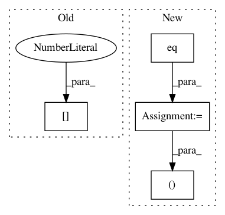

9f2a83c4ce192da805e18617ce2421bb80cfe8fe,snntoolbox/core/inisim.py,SpikeConv2DReLU,get_output,#SpikeConv2DReLU#Any#,220
Before Change
conv_out = conv_out[:, :, shift_x:inp.shape[2] + shift_x,
shift_y:inp.shape[3] + shift_y]
self.impulse = conv_out + K.reshape(self.get_weights()[1],
(1, self.nb_filter, 1, 1))
output_spikes = update_neurons(self, self.impulse, time, updates)
self.updates = updates
After Change
inp, time, updates = get_input(self)
// Modify parameters if firing rate of layer too low
self.fac = theano.ifelse.ifelse(
T.eq(time / settings["dt"] % 10, 0) *
T.gt(self.max_spikerate, 0.1) *
T.gt(1 / settings["dt"] - self.max_spikerate, epsilon),
1 / (self.max_spikerate + 0.001), 1.0)
updates.append((self.W, self.W * self.fac))
updates.append((self.b, self.b * self.fac))
// CALCULATE SYNAPTIC SUMMED INPUT
In pattern: SUPERPATTERN
Frequency: 3
Non-data size: 4
Instances
Project Name: NeuromorphicProcessorProject/snn_toolbox
Commit Name: 9f2a83c4ce192da805e18617ce2421bb80cfe8fe
Time: 2016-06-29
Author: bodo.rueckauer@gmail.com
File Name: snntoolbox/core/inisim.py
Class Name: SpikeConv2DReLU
Method Name: get_output
Project Name: NeuromorphicProcessorProject/snn_toolbox
Commit Name: 9f2a83c4ce192da805e18617ce2421bb80cfe8fe
Time: 2016-06-29
Author: bodo.rueckauer@gmail.com
File Name: snntoolbox/core/inisim.py
Class Name: SpikeDense
Method Name: get_output
Project Name: rusty1s/pytorch_geometric
Commit Name: 776f891afa3e7bfe2ae456c064e0867c4987c762
Time: 2020-06-30
Author: matthias.fey@tu-dortmund.de
File Name: examples/rgcn.py
Class Name:
Method Name: test